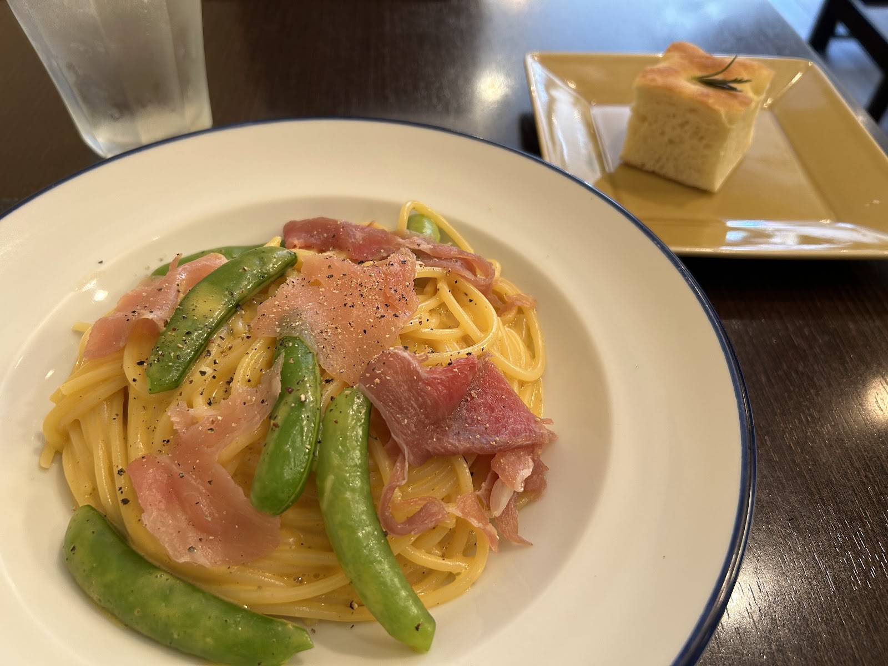
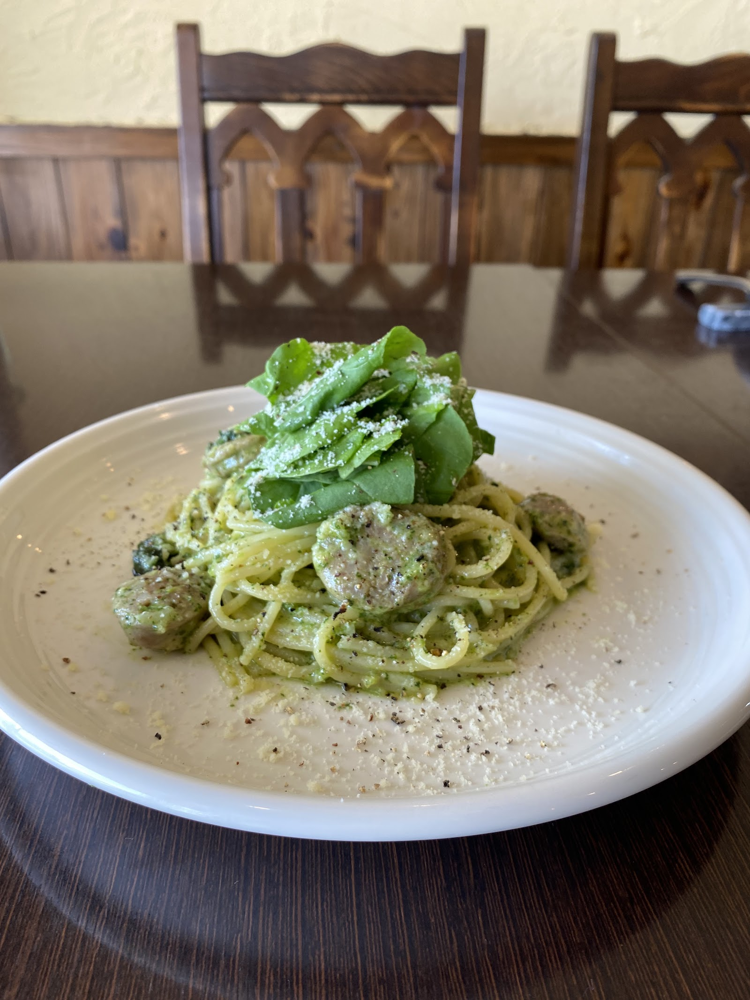
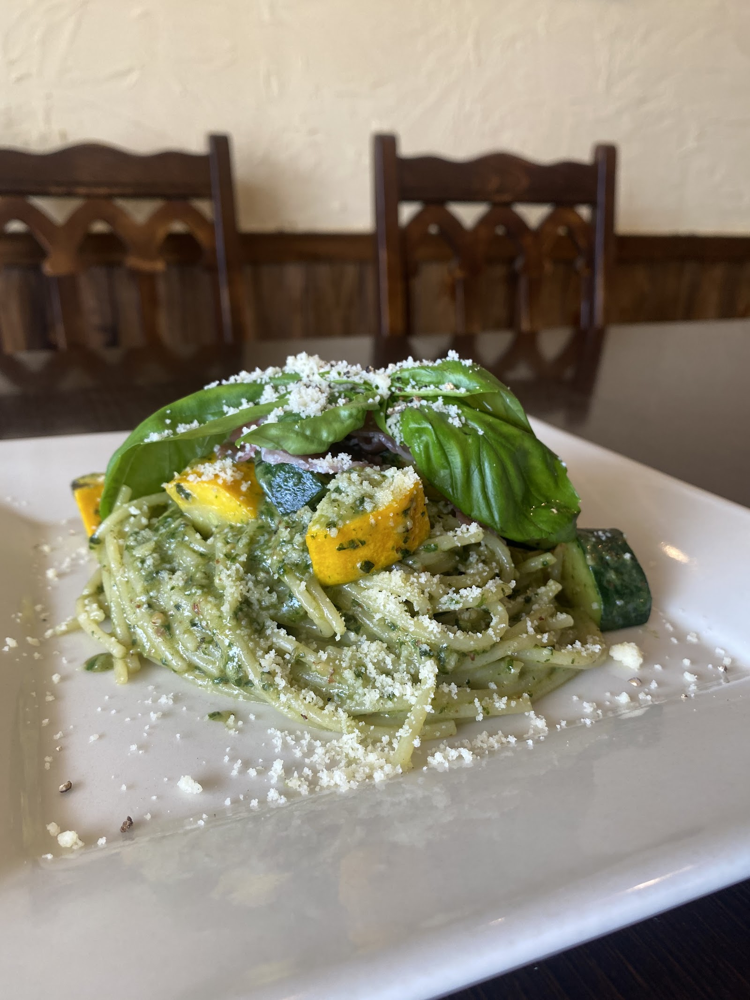

Concept
こだわり・コンセプト

F- Konoトラットリア キタッラは、千葉県我孫子市寿にあるイタリア料理店です。
パスタを軸に、クリームの優しさが広がる一皿、トマトの赤が映える一皿、バジルの香り立つジェノベーゼの一皿など、ソースによって表情の異なるお料理をご用意しています。
お料理の写真の背景には、アーチ型の透かし彫りが施された木の椅子や、木の腰壁、生成り色の漆喰壁が写り込んでいます。重厚になりすぎない、木の温もりが感じられる空間です。
小さな豆知識
店名の「キタッラ(Chitarra)」は、イタリア語で「ギター」を意味する言葉です。四角い断面の生パスタを切り出す、伝統的な調理器具の名としても知られています。
千葉県我孫子市寿という立地
千葉県我孫子市寿2丁目に店を構えています。
パスタを中心とした、彩り豊かなソースの数々
クリーム系・トマト系・ジェノベーゼ系など、複数の系統のパスタをお楽しみいただけます。
木のぬくもりが感じられる店内
木製の椅子や腰壁、生成り色の壁が、温かみのある空間を作っています。
Googleクチコミでの評価
Google上で★4.4・44件のクチコミが寄せられています(2026年時点の公開情報)。
同じジェノベーゼ仕立てでも、食器や盛り付けによって表情が変わります。

トラットリア キタッラ (Trattoria Chitarra)
トラットリア キタッラ (Trattoria Chitarra)トラットリア キタッラの雰囲気をぜひ確かめにお越しください。